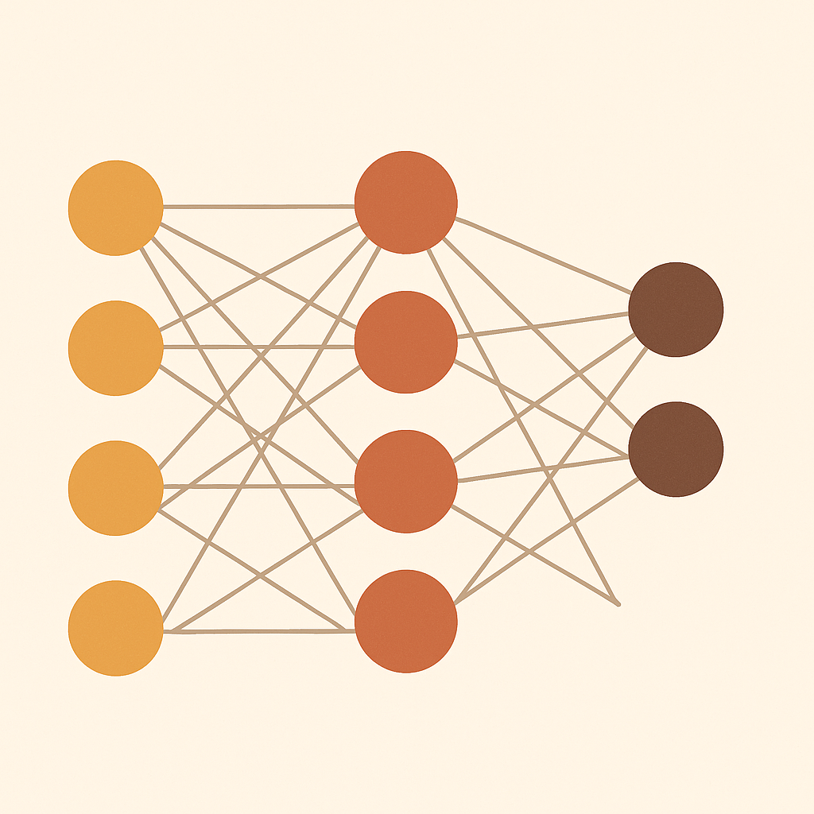
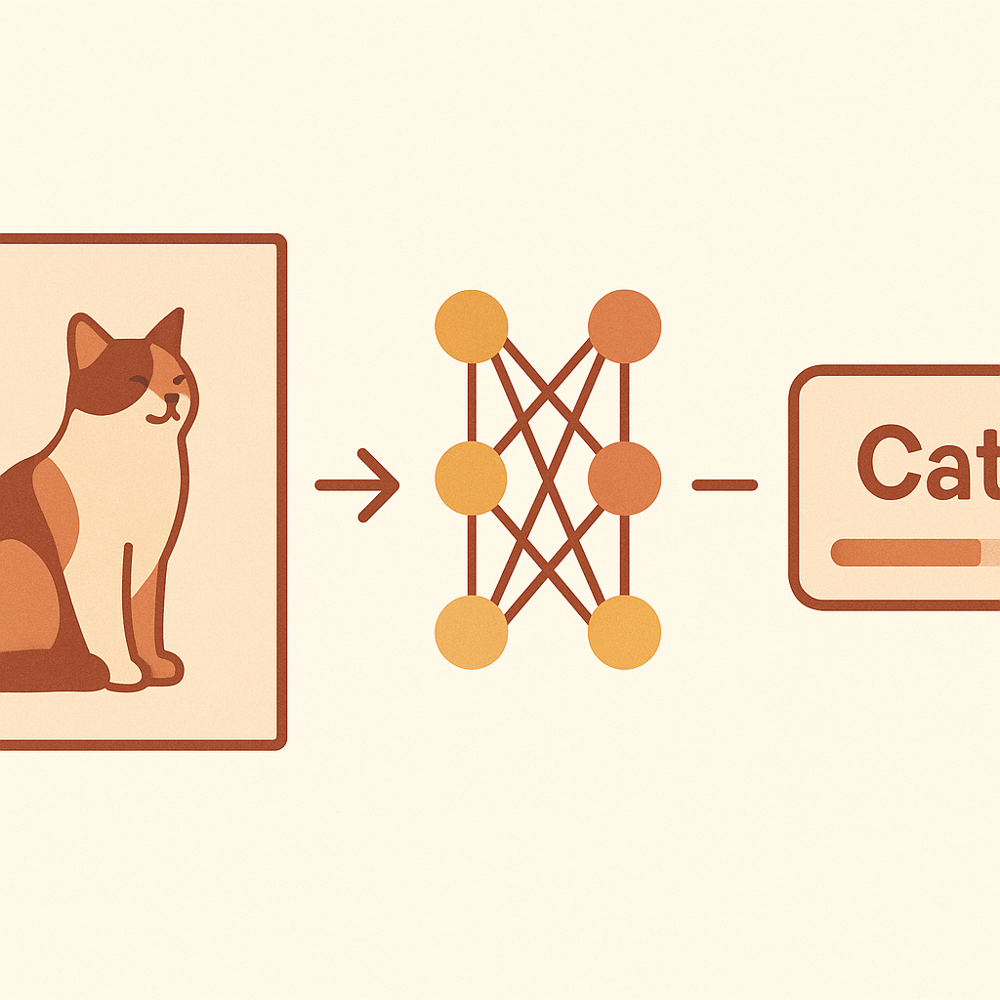

You use them every day. Here's how they actually work — no jargon, no math, just clarity.

At its core, a neural network takes raw input — an image, a sentence, a sound — and transforms it into a useful answer. A photo goes in, a name comes out. Text goes in, the next word comes out. Audio goes in, a transcript comes out.
Every time you unlock your phone with your face, ask Siri a question, or get a Netflix recommendation — a neural network is doing exactly this behind the scenes.

Same idea as your brain — input comes in, passes through connected layers, and an answer comes out the other side. Each layer picks up on different patterns. Early layers detect simple features (edges, shapes). Deeper layers combine those into complex concepts (faces, objects, meaning).
The key difference: a human brain has ~86 billion neurons connected by synapses and learns from experience. A neural network has digital neurons connected by weights and learns from data. The principle is the same — the scale is different.
It starts wrong. Then it keeps practicing until it's not. The network guesses an answer, checks if it was right, adjusts its connections to do better, and repeats — thousands of times until it nails it. This is called training. More examples, better results.
Every time you unlock your phone with Face ID, a neural network runs this entire process — input, layers, output, trained from data — all in under a second.
Take something in. Run it through layers. Give an answer. Learn from mistakes. Get better.
That's a neural network.